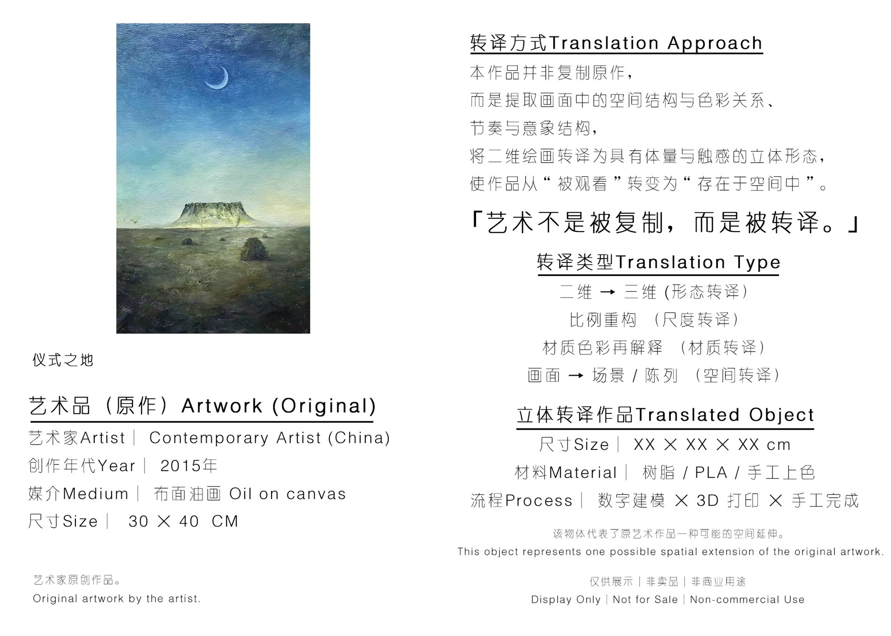
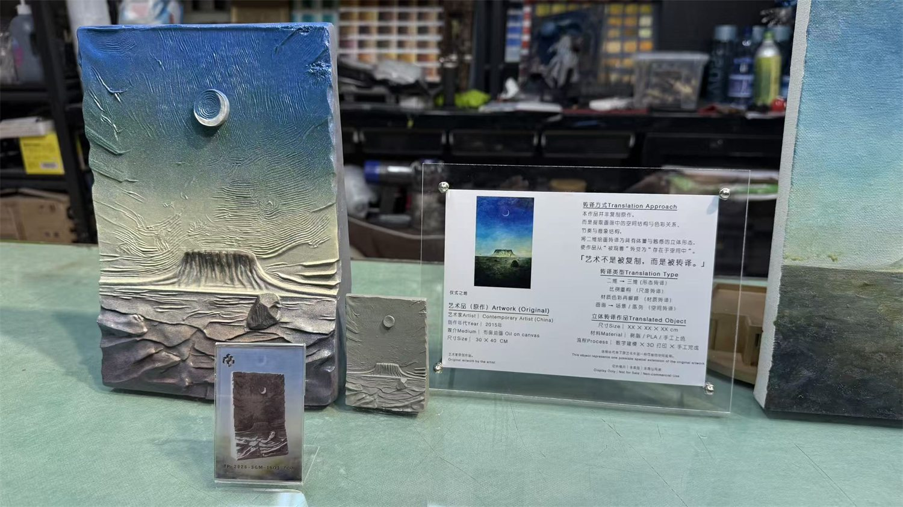

该样本来自测试系列中的一件二维视觉作品或艺术图像，具体作品名称、媒介、尺寸与来源以介绍图标注为准。当前页面不替代原作版权说明，仅作为转译样本档案。
Test Series Archive
月夜风景绘画转译样本
测试系列编号：TP-2026-SGM-TS01-033。本页用于记录该样本的原作信息、转译过程、成品形态、用途、版权状态与授权可能性。


从画面中的重心、层次、节奏和构成关系入手，将平面视觉语言转化为具有体量感和观看方向的三维结构。
形成小尺寸结构模型，可包含白模、涂装版本、底座、说明卡或展示组合。模型用于验证该作品是否适合从二维图像进入三维空间。
适合用于艺术家作品延展、画廊展示、空间陈列样品、收藏级模型与转译方法展示。
原作版权归原作者或权利方所有。本页仅作为结构转译测试样本档案展示，不代表已获得商业复制、销售或衍生授权。
可在原作者/收藏者授权后进入限量收藏、展览展示、文创衍生、空间装置或数字结构资产授权体系。